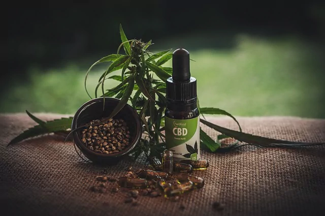

LAS VEGAS SPORTS CLINIC
Menu
Home
Blog
Patient Portal
Services
Article Discussion: Clinicians’ Guide to Cannabidiol and Hemp Oils

Original article at Mayo Clinic Proceedings
PDF (1 MB)
With the increasing popularity of CBD, it is worth reviewing this article which reviews the evidence for efficacy of CBD in treatment of pain and other health issues. CBD = cannabidiol THC = tetrahydrocannabidiol Summary of abstract: + Patients have reported that CBD provides pain relief without causing intoxication. - Epidiolex is the first CBD-based drug approved by the US Food and Drug Administration (FDA). Epidiolex was approved by the FDA in June 2018. It was approved for treatment of some forms of epilepsy. - There is increasing evidence that suggests CBD may be helpful in the treatment of chronic pain or opioid addiction. - Studies suggest some CBD products do not accurately list the amount of THC and CBD actually contained in the products. - The article summarizes the research done on cannabinoids, CBD and hemp oil - The differences between marijuana, hemp, and the different components of CBD and hemp oils are reviewed - The legal status of CBD and hemp oils is reviewed - Recommendations are made to help health care professionals to identify safer CBD and hemp oil products - The article is based upon review of articles from a PubMed search using the following search terms: CBD, cannabidiol, hemp oil, medical marijuana Body of the article: Opiate abuse has been devastating to society so there is interest in finding alternative means of pain control. Cannabis sativa, the plant from which marijuana, hemp and cannabidiol (CBD) oils originate, is being investigated as a possible alternative to opioids for pain control. Some evidence suggests that people use fewer opiates when there is access to medical marijuana in their area. A problem, though, is that some health care professionals have been reluctant to recommend products which are related to marijuana since marijuana has been identified as substance that may be abused. CBD and hemp oils are used by many for possible health benefits without the intoxication caused by marijuana. Barriers to health care professionals recommending these products include lack of understanding of CBD/hemp oils and uncertainty about safety and legal status of these products. Cannabis sativa has been used for many years for health benefits including pain control and epilepsy. Marijuana and hemp both come from the plant Cannabis sativa, but hemp is a strain of the plant with low THC content and is generally used for clothing, food and other uses. The endocannabinoid system (ECS) is involved in many processes in the body such as regulating inflammatory conditions, immune function in the gut, anxiety and many other functions in the body. The body naturally produces its own cannabinoids (called endocannabinoids, namely anandamide and 2-arachidonylglycerol). Cannabinoids can also come from plants and these are called phytocannabinoids. THC and CBD are two of the most studied phytocannabinoids. THC binds to the CB1 receptor and causes intoxicating effects, among other effects in the body. CBD has minimal effect at the CB1 receptor, which is thought to be thre reason CBD does not cause intoxication. Synthetic cannabinoids (made in a labaratory) also exist, such as nabiximols which has been approved in the United Kingdom for pain and spasms in multiple sclerosis patients. Some products tout an “entourage effect” meaning the claim is that multiple components in these products may act synergistically to result in a net effect that is greater than the sum of each individual component on its own. Marijuana and hemp were illegal to grow and sell in the U.S. until the Agricultural Act was passed in 2014. The Act defined “industrial hemp” as Cannabis sativa (or any portion of the plant) which contains no more than 0.3% THC. Since CBD and hemp oils are derived from hemp (Cannabis sativa with less than 0.3% THC content), these products are legal in the U.S. (except for Nebraska which, as of 2019 still has no Cannabis sativa access laws). One major issue is that the FDA has warned many companies that their products contain more than the legally allowed 0.3% THC content or less CBD than listed on the product label. Despite state C. sativa access laws, health care professionals cannot write prescriptions for medical marijuana for medical conditions. Medical marijuana can only be recommended or the patient can be certified and the patient must purchase them on their own. CBD and hemp oils (which contain less than 0.3% THC), on the other hand, can be purchased without certification or recommendation by a health care professional. The federal government and the DEA still classify CBD and hemp oils to be schedule I substances, despite the fact that, at the state level, there are C. sativa access laws. It is no longer legal to use CBD in dietary supplements or foods. According to the article, this is related to the use of CBD in the prescription drug Epidiolex. Previously, there were no prescription drugs in the U.S. containing CBD. Epidiolex is classified as schedule V by the DEA. The article states there is a lack of clarity when it comes to the different types of CB?D and hemp oils. Different products may contain different components depending on which part of the C. sativa plant is used. The seeds contain very low amounts of phytocannabinoids and high amounts of omega-6 and omega-3 fatty acids and antioxidants. The flowers and leaves contain the most THC and CBD as well as terpenoids.
Tip if you liked the article!